Part A: Exploring the Power of Flow Models
Setup
For this part, I used the pretrained PixNerd-XXL-P16-T2I model, which generates and edits 512 × 512 images. For now, assume that I use seed 180, an Euler step size of 0.02, and the prompt "a high quality photo." One thing to keep in mind throughout is that t = 0 is pure noise and t = 1 is the clean image, so moving forward in time means moving toward the picture.
1. Visualizing Training and Sampling
1.1 Constructing Noisy Training Inputs
For this section I used a photo I took of a duck standing on a fountain. To make the noisy versions, I blend the image with Gaussian noise using the formula below.
$$x_t = (1 - t)\,\epsilon + t\,x_1, \qquad \epsilon \sim \mathcal{N}(0, I)$$
I used the same noise for t = 0.25, 0.50, and 0.75, and kept these three images for the next few sections.
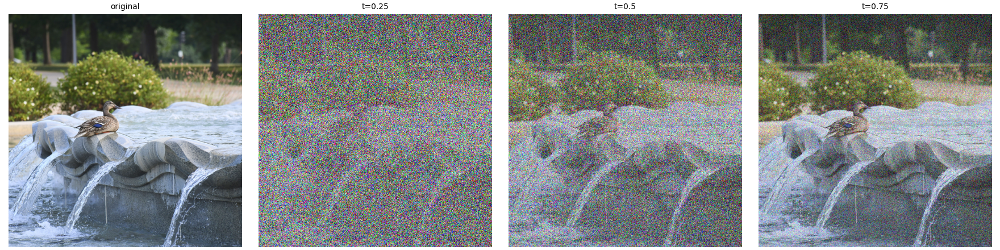
At t = 0.25 you can barely tell there's a duck at all. By t = 0.50 the fountain and the duck start to show up, and at t = 0.75 it really just looks like a grainy version of my photo.
1.2 Classical Denoising
Before using the model, I tried the classic approach of blurring the noise away. Since the image gets dimmed by t, I divide by t first and then apply a Gaussian blur.
$$\hat{x}_1^{\text{blur}} = G_\sigma\!\left(\frac{x_t}{t}\right)$$
I tried σ values of 1, 2, 4, 8, and 16, and kept whichever one had the lowest error compared to the original (σ = 8, 4, and 2 for the three times).
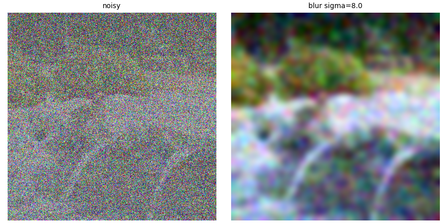
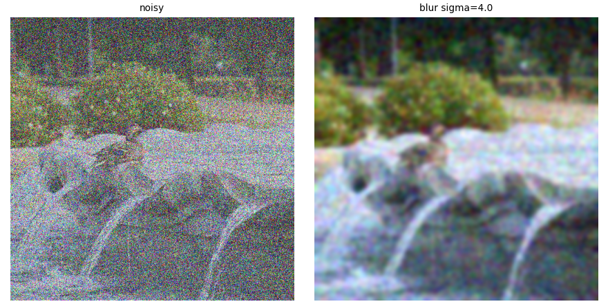
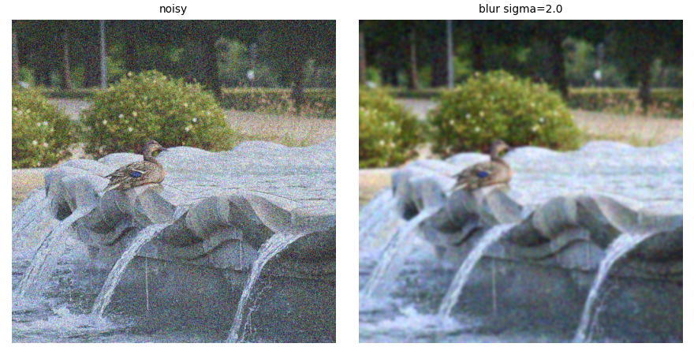
The blur does get rid of the noise, but it takes all the detail with it, so the feathers and water streams are completely gone. At t = 0.25 the duck turns into a colorful smudge, which shows that blurring can't bring back anything the noise has already covered up.
1.3 One-Step Denoising
Next, I used the flow model itself. It predicts which direction the image should move, and I jump straight to the end in one step.
$$\hat{x}_1 = x_t + (1 - t)\,v_\theta(x_t, t, c)$$
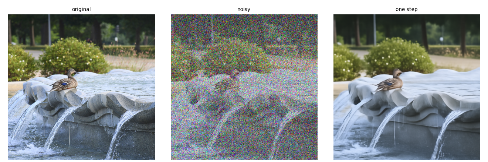
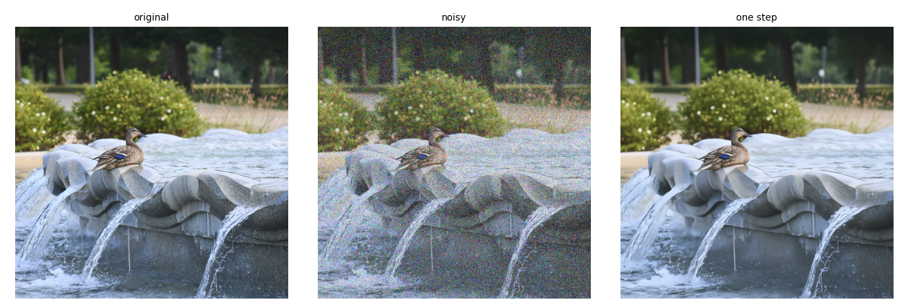
This worked so much better than blurring. Even at t = 0.25 you can see the duck, the fountain, and the bushes behind it, although everything looks soft and a little washed out. I think this happens because one big jump tends to land on an "average" of all the images that could be hiding under that much noise.
1.4 Visualizing Velocity
Because I kept the exact noise from 1.1, I know precisely what change would turn each noisy image back into my photo, so I could line that up against the change the model actually predicts.
$$\Delta_{\text{pred}} = (1 - t)\,v_\theta(x_t, t, c), \qquad \Delta_{\text{gt}} = x_1 - x_t$$
The error heatmap shows, for each pixel, how far off the prediction is (averaged across the red, green, and blue channels).
$$E_t = \sqrt{\operatorname{mean}_{\text{RGB}}\left[(\Delta_{\text{pred}} - \Delta_{\text{gt}})^2\right]}$$
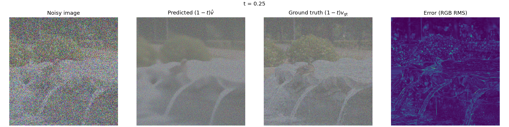
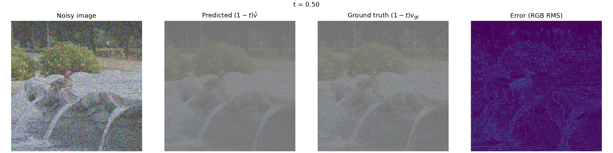
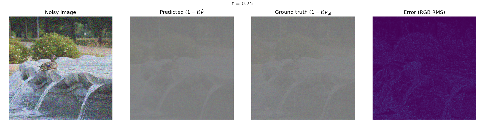
The error is biggest at t = 0.25 and gets smaller as t increases, which makes sense since there's more of the real image to work with. Most of the error lands on edges and textures, like the duck, the rim of the fountain, and the water, while the blurry background is easy for the model to get right.
1.5 Iterative Denoising with Euler Sampling
Instead of one big jump, Euler sampling takes lots of small steps and asks the model for a new direction each time.
$$x_{t+h} = x_t + h\,v_\theta(x_t, t, c)$$
Starting from my t = 0.50 image, that's 25 steps of size 0.02.
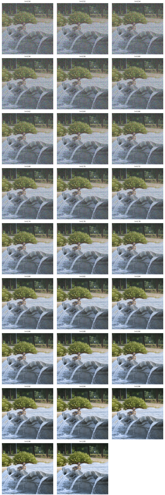
You can watch the grain slowly fade while the feathers and water come back into focus. Here are all three methods side by side, starting from the same noisy image.
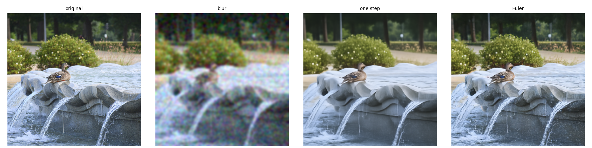
Euler is clearly the sharpest, but surprisingly its error (0.0149) is actually a little higher than one-step's (0.0123), with blur at 0.0244. I think this is because Euler invents realistic detail that doesn't match my photo pixel for pixel, so a lower error doesn't always mean a better looking image.
1.6 Generating Images from Noise
The same sampler can also make images completely from scratch. I started from pure noise with seeds 180 through 184 and took 50 steps without any extra guidance.

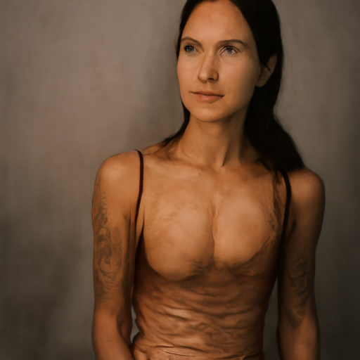

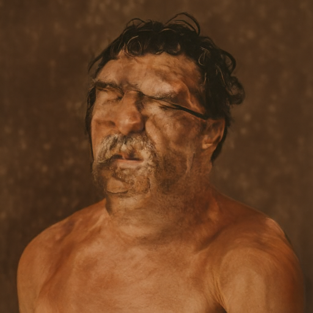

All five came out as people, even though the prompt never asked for one, and honestly they're pretty rough (some of the faces are weirdly shaped and blurred). It seems like the vague prompt leaves the model unsure of what to draw, so it falls back on portraits.
2. Conditional Generation and Guidance
2.1 Classifier-Free Guidance (CFG)
To make the prompt matter more, I run the model twice at every step, once with the prompt ($v_c$) and once with an empty prompt ($v_u$), and then push the image further in the direction the prompt adds.
$$v_{\text{cfg}} = v_c + w\,(v_c - v_u), \qquad w = 7$$
I reused the same seeds as 1.6, so each pair below starts from the exact same noise.


The difference is huge, and every seed turns into a clean, well-lit studio portrait with sharp features. The downside is that they all look really similar, since guidance doubles down on whatever the model thinks "a high quality photo" means (which apparently is a centered portrait).
3. Creative Applications
Everything in this section uses guidance with w = 7. For the edits, I used seed 180 and the starting times 0.02, 0.04, 0.06, 0.10, 0.14, 0.25, and 0.50.
3.1 Image-to-Image Editing
To edit an image, I add noise up to a starting time and then let the model fill the rest back in.
$$x_{t_{\text{start}}} = (1 - t_{\text{start}})\,\epsilon + t_{\text{start}}\,x_1$$
Starting earlier gives the model more freedom to change things, and starting later keeps the result closer to the original.
Campanile
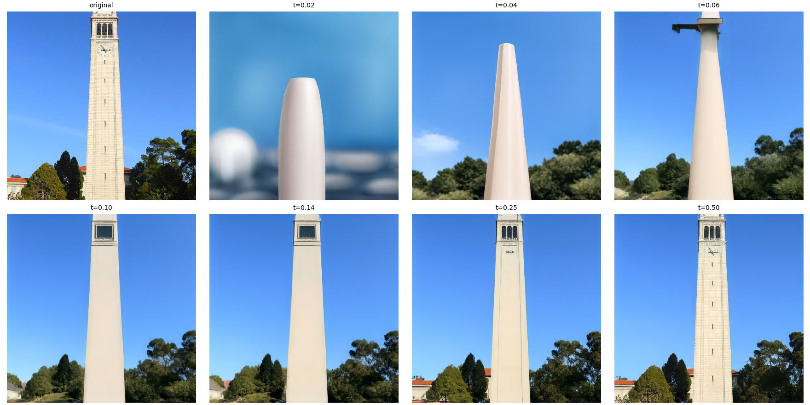
Duck on a fountain
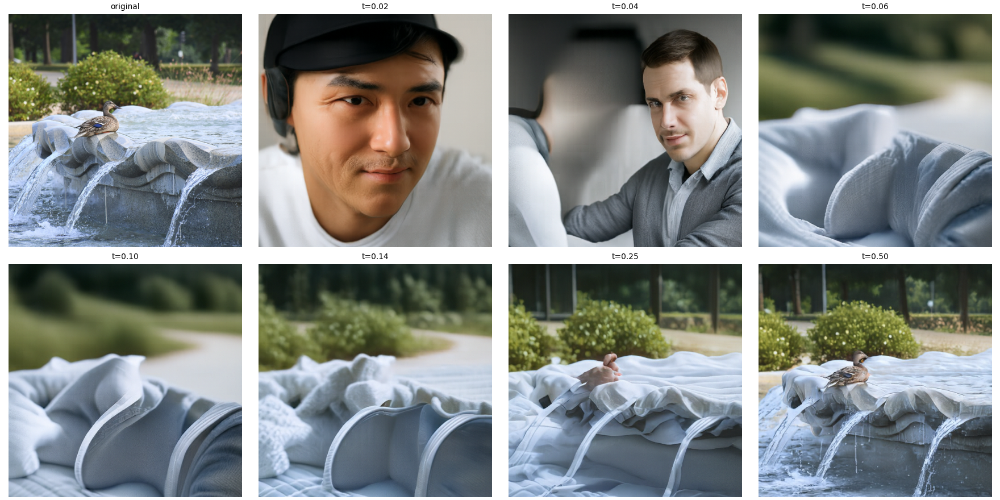
Egret on a cliff
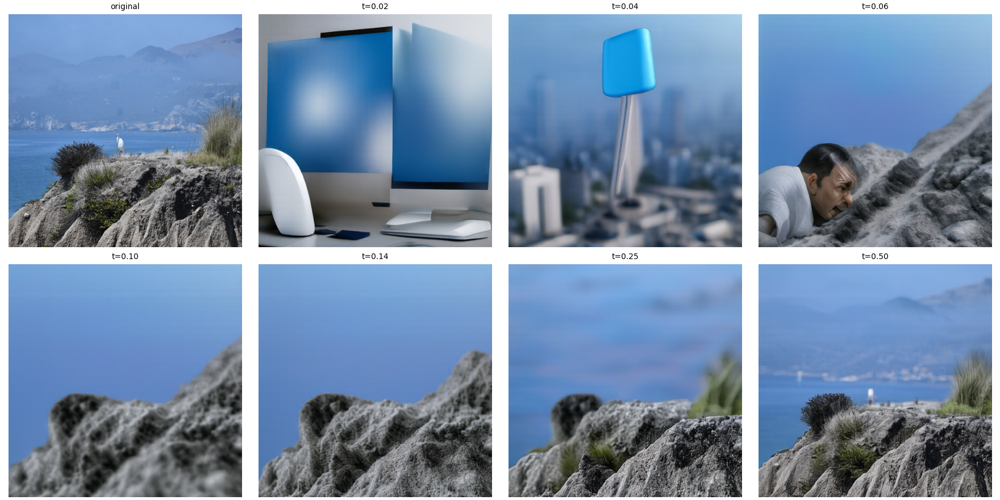
At the earliest times only the colors survive, so the model draws something unrelated (the duck turns into portraits of people, and the egret into a computer desk and then a blurry city). The fountain becomes folds of a blanket for a while, and by 0.50 both of my photos are basically back to normal. The bird is so small in the frame that it's the very last thing to reappear.
Editing Hand-Drawn and Web Images
I tried the same thing on a pixel-art cat I found online and two drawings I made myself (a vase of flowers and an orange cat).
Web image, pixel-art cat
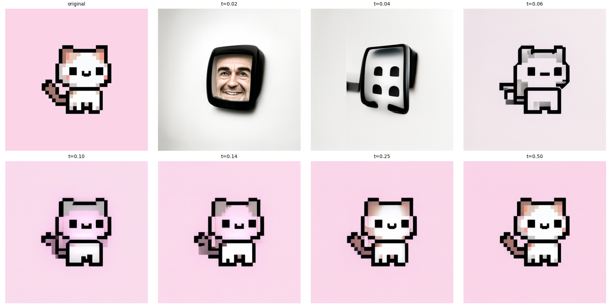
My drawing, flower vase
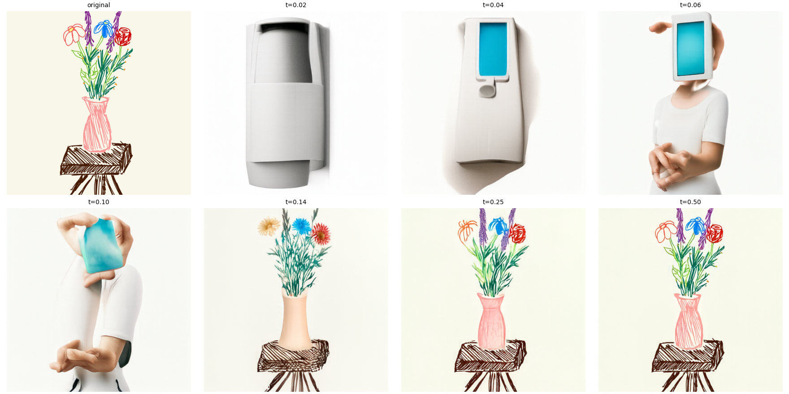
My drawing, orange cat
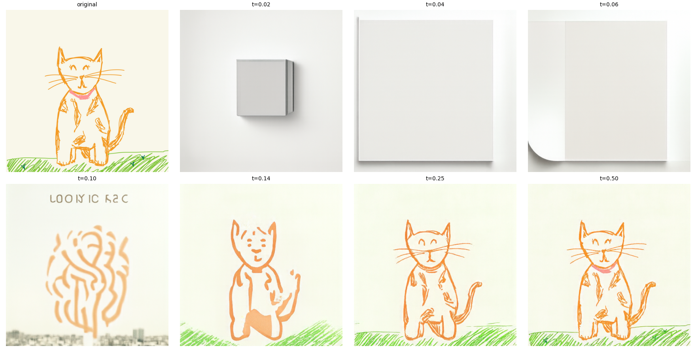
What surprised me is that the drawings don't all behave the same way. After about t = 0.14, the flower vase actually turns into a real-looking photo of a vase with flowers, not just a nicer sketch. My line-drawn cat never recovers like that: it falls apart into orange squiggles at 0.10 and stays a sketch. The bold pixel cat holds its shape from 0.06 onward, which I think is because thick, solid shapes survive the noise better than thin lines.
3.2 Text-Guided Image Editing
This time I used my own prompts instead of "a high quality photo."
Campanile to Eiffel Tower, with "a photograph of the eiffel tower in Paris"
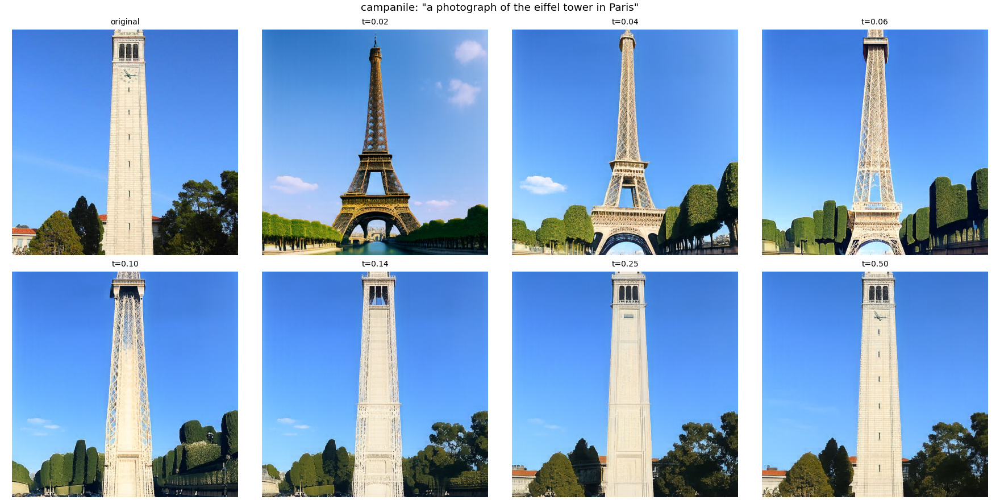
Duck to rubber duck, with "a rubber duck in a bathtub"
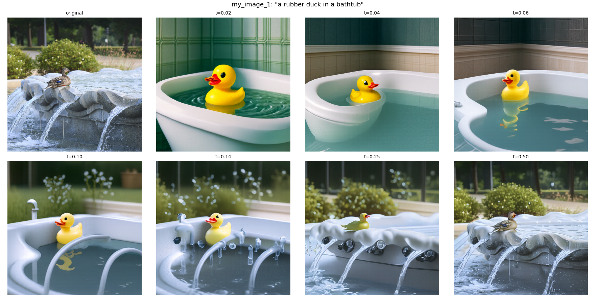
Egret to lighthouse, with "A lighthouse on a cliff by the ocean"
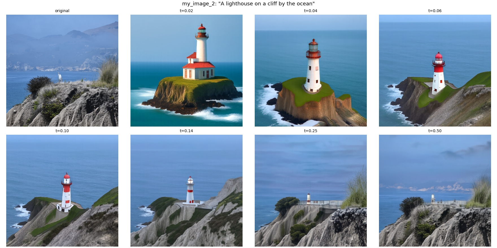
The Eiffel Tower starts out complete (sitting over the Seine) and slowly morphs back into the Campanile, and at 0.10 and 0.14 it's a really fun hybrid with the iron lattice wrapped around the Campanile's tower and belfry. The rubber duck gradually turns back into my real duck as the starting time increases. The lighthouse is my favorite though, because it shrinks and slides into exactly where the egret was standing until it's a tiny white tower the same size as the bird.
3.3 Visual Anagrams
A visual anagram is one image that shows one thing upright and something else when you flip it upside down. At each step, I average the direction for the upright image with the direction for the flipped image (flipped back so they line up).
$$v = \tfrac{1}{2}\Big(v_{\text{cfg}}(x_t, t, p_a) + F\big(v_{\text{cfg}}(F(x_t), t, p_b)\big)\Big)$$
Castle and knight (lithograph, seed 181)
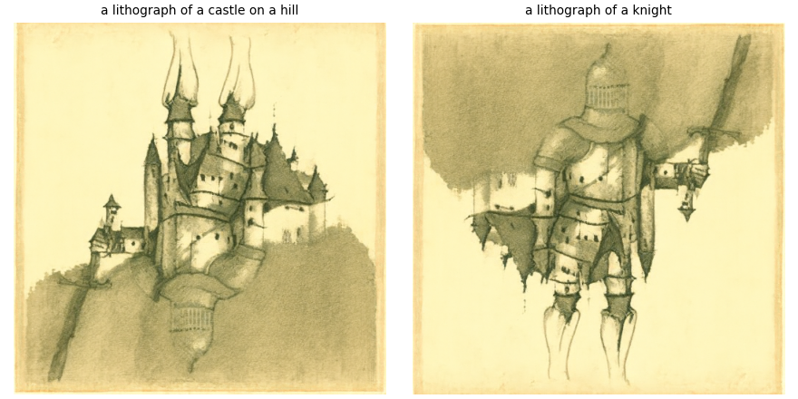
Forest and bear (oil painting, seed 180)
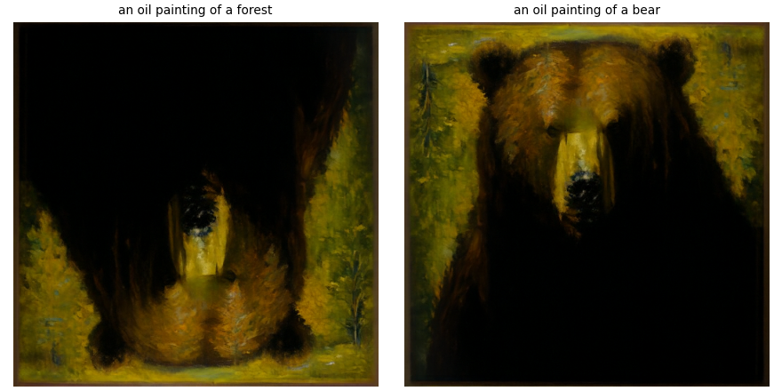
The castle and knight came out the best, since the knight becomes the castle and his helmet becomes a tower. The forest and bear works too, with the bear's snout turning into a path through a dark forest. It took a few failed tries to get here (a tiger, a zebra, and a crab), and I learned that strong subjects like animals tend to take over vaguer ones like "a forest," and that a crab looks pretty much the same upside down anyway.
3.4 Hybrid Images
For hybrid images, one prompt controls the big shapes you see from far away, and the other controls the fine details you see up close.
$$v = G_\sigma(v_a) + v_b - G_\sigma(v_b)$$
Coffee and mountain (seed 181), with "a lithograph of a cup of coffee" from far away and "a lithograph of a mountain" up close
Spaceship and Milky Way (seed 180), with "a lithograph of a spaceship" from far away and "a lithograph of the milky way" up close
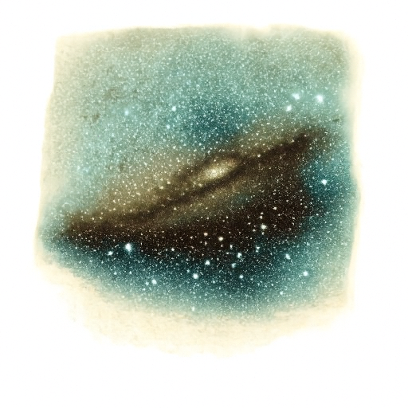
The coffee one worked really well. Up close it's snowy peaks over a bank of clouds, but when you shrink it down it's clearly a cup of coffee, and one of the ridges even becomes the handle. The spaceship is a lot subtler, since it looks like a galaxy up close and a flying saucer from far away (and those two already have pretty similar shapes).
Part B: Flow Matching on MNIST
In Part B, I trained my own models on MNIST from scratch, starting with a simple denoiser and working up to a model that can generate whichever digit I ask for.
1. Training a Single-Step Denoising UNet
1.1 Implementing the UNet
The UNet shrinks the image down (28 to 14 to 7 to a single pixel) and then builds it back up, with skip connections that carry the fine details across so they don't get lost along the way.

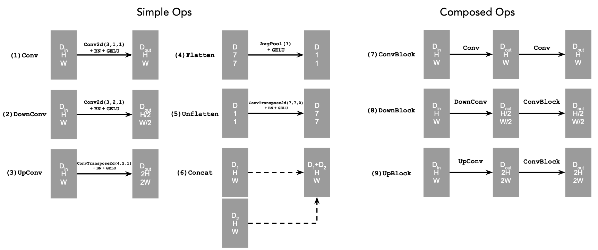
1.2 Using the UNet to Train a Denoiser
To train it, I add noise to clean digits and teach the UNet to remove it.
$$z = x + \sigma\epsilon, \qquad L = \mathbb{E}_{z,x}\,\lVert D_\theta(z) - x \rVert^2$$
Here's what the digits look like at different noise levels, going from σ = 0 at the top to σ = 1.0 at the bottom.
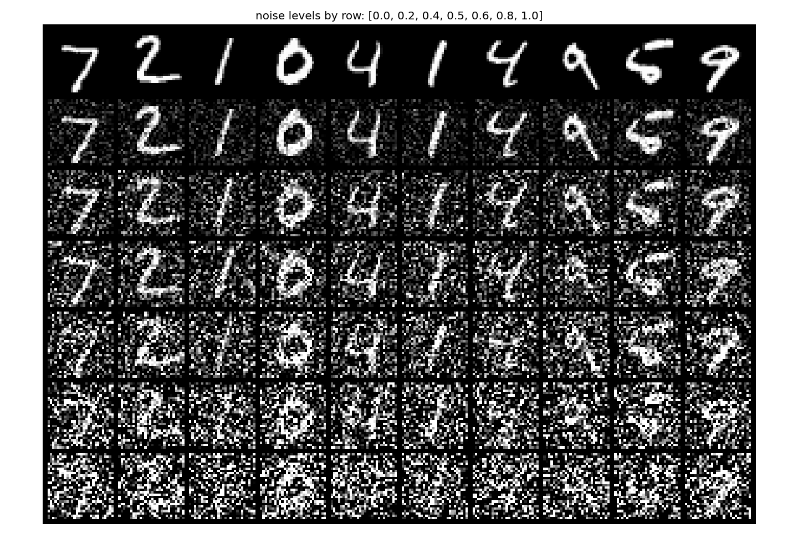
1.2.1 Training
I trained for 5 epochs at σ = 0.5, with D = 128, a batch size of 256, and Adam at a learning rate of 1e-4 (adding fresh noise to every batch).
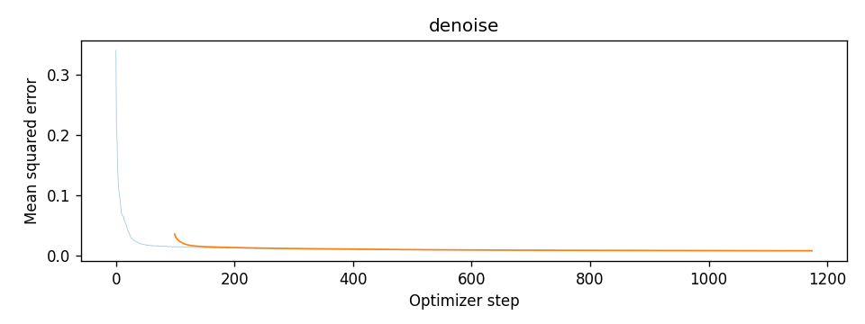
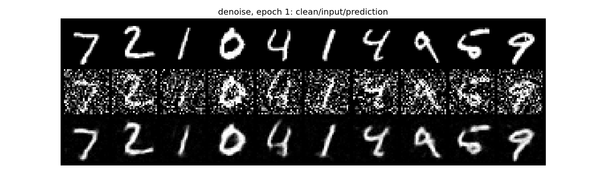
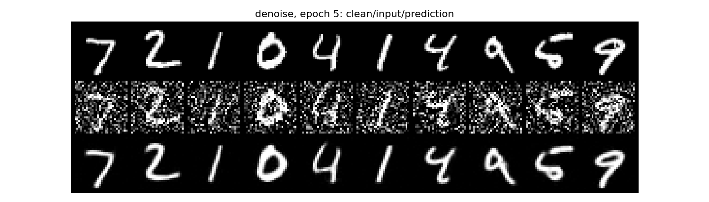
The loss drops really quickly, and the digits are already readable after the first epoch. By epoch 5 they're just a bit sharper.
1.2.2 Out-of-Distribution Testing
Since the model only ever trained on σ = 0.5, I wanted to see how it handles other noise levels.
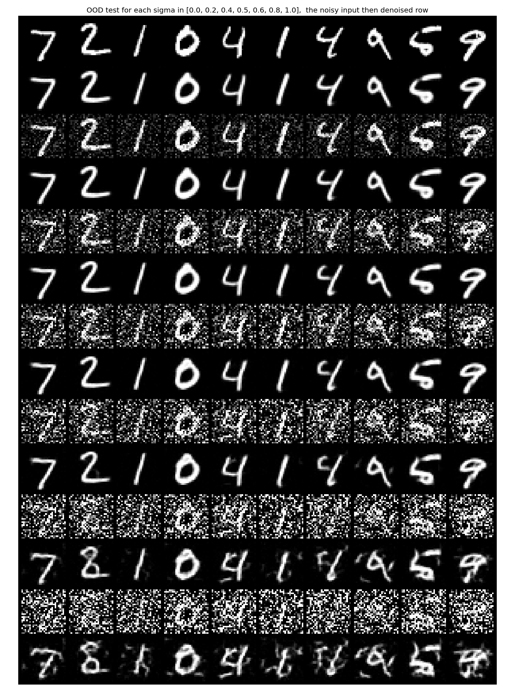
It does fine up to σ = 0.6, but at 0.8 it starts making things up (one of the 2s turns into an 8), and at 1.0 the digits fall apart into scribbles.
1.2.3 Denoising Pure Noise
Next, I tried training the denoiser on pure noise, with no digit hidden inside at all, to see if it could create digits from nothing.
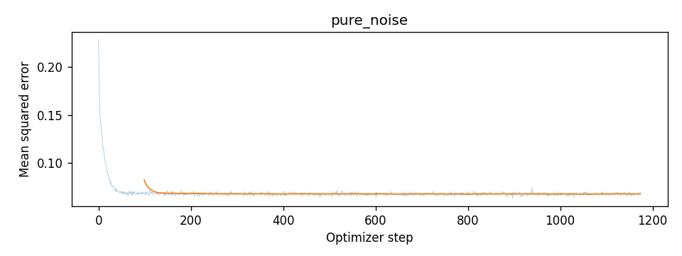
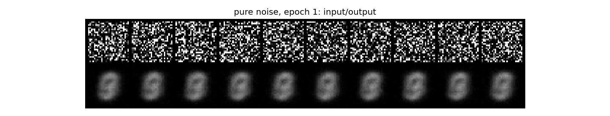
Every output ends up as the same blurry ghost that looks like a 0, 3, and 8 mashed together. This happens because the noise doesn't tell the model anything about which digit to draw, so with an MSE loss its best guess is just the average of all the digits it has seen.
$$D^*(z) = \mathbb{E}[x]$$
So one-step denoising can't really generate new images, which is where flow matching comes in.
2. Training a Flow Matching Model
Instead of making one big jump, flow matching teaches the model to walk from noise to a digit in lots of small steps.
$$x_t = (1 - t)\,x_0 + t\,x_1, \qquad L = \mathbb{E}\,\lVert (x_1 - x_0) - u_\theta(x_t, t) \rVert^2$$
2.1 Adding Time Conditioning to UNet
The model needs to know how noisy its input is, so I feed in the time t through two small fully connected blocks that scale the UNet's features.
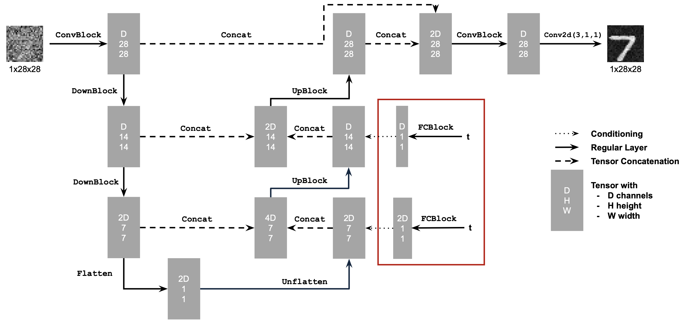
2.2 Training the UNet
I trained for 10 epochs with D = 64, a batch size of 64, and Adam starting at 1e-2 with an exponential learning rate scheduler.
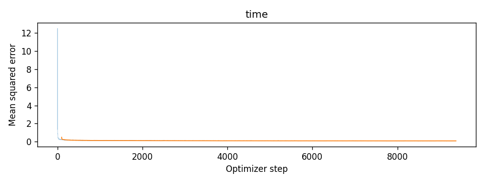
The loss drops almost right away and then slowly keeps creeping down.
2.3 Sampling from the UNet
To generate digits, I start from noise and take 50 small steps, using the same seed each time so the epochs are easy to compare.
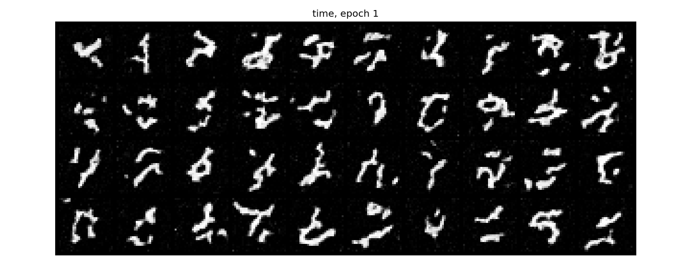
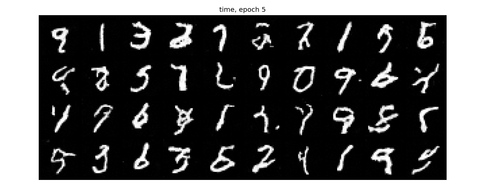
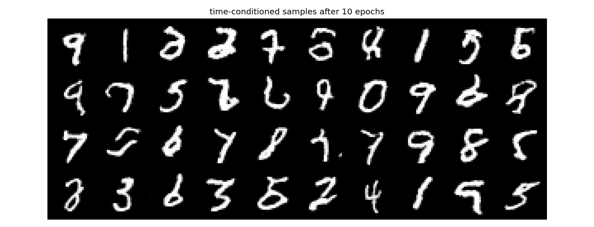
Epoch 1 is mostly scribbles, epoch 5 is mostly real digits, and by epoch 10 they're pretty legible, with a few weird ones (one of them looks like both a 4 and a K). Since the model has no say in which digit it draws, some end up somewhere in between.
2.4 Adding Class Conditioning to UNet
To choose which digit gets drawn, I also feed in the digit's label through two more blocks. 10% of the time I hide the label, so the model also learns to generate without one, which is what guidance needs later.
2.5 Training the UNet
The training setup is the same as 2.2, just with the labels added in.
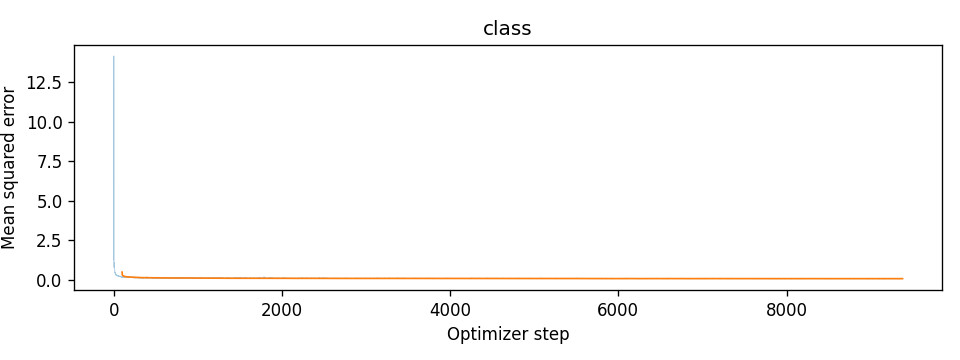
2.6 Sampling from the UNet
I sampled with classifier-free guidance (γ = 5) and 300 steps, generating four of each digit.
$$u = u_\theta(x_t, t, \varnothing) + \gamma\left[u_\theta(x_t, t, c) - u_\theta(x_t, t, \varnothing)\right]$$
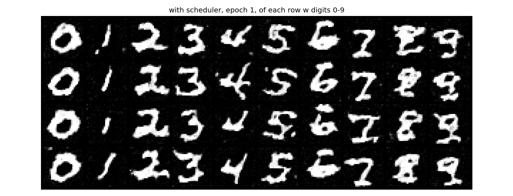
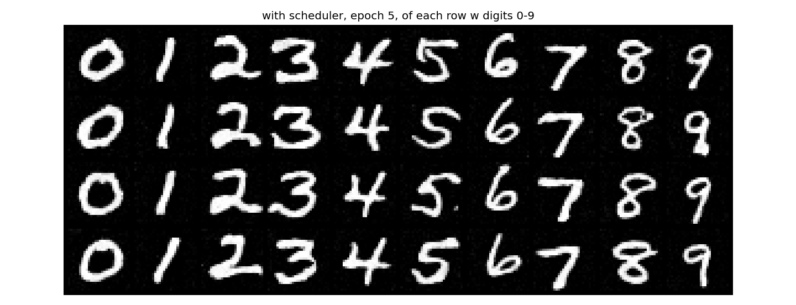
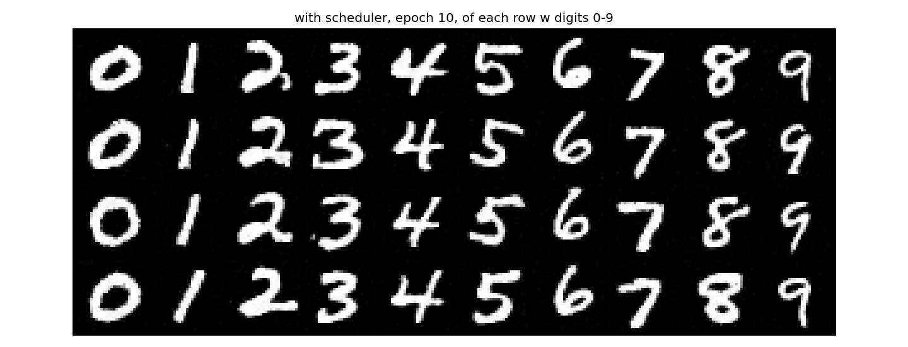
This time every digit is the one I asked for, even after just one epoch. The epoch 1 digits are a little blotchy, but by epoch 5 they look great.
Removing the Learning Rate Scheduler
To get rid of the scheduler, I trained a new model with a constant learning rate of 1e-3 (which is where the scheduler ends up anyway) and kept everything else the same.
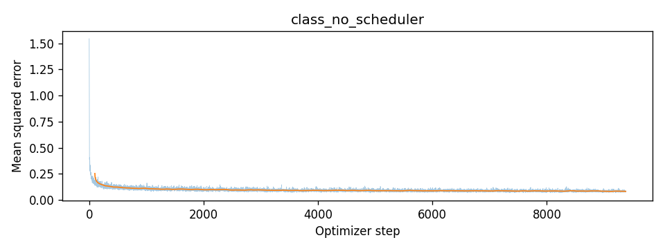
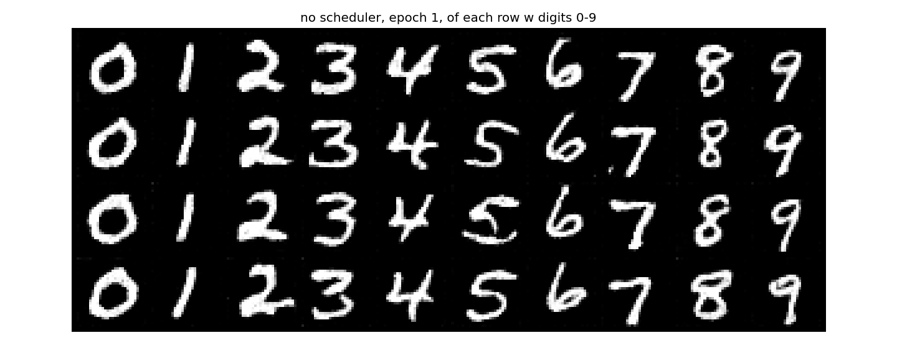
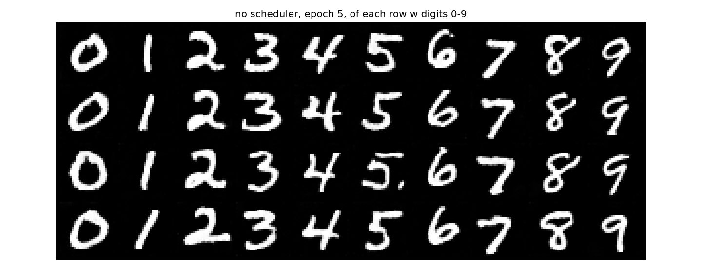
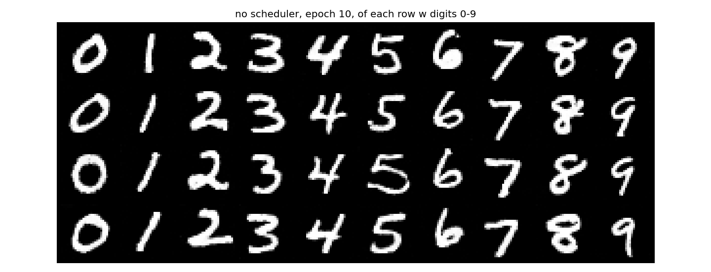
It works just as well! The scheduler starts with a big learning rate that overshoots at first (you can see the huge first spike in the loss and the messier epoch 1 digits), while the smaller constant rate looks clean right from the start. By epochs 5 and 10 the two models look basically the same, so I don't think the scheduler is really needed here. The only downside I noticed is that the loss curve is a bit noisier without it.